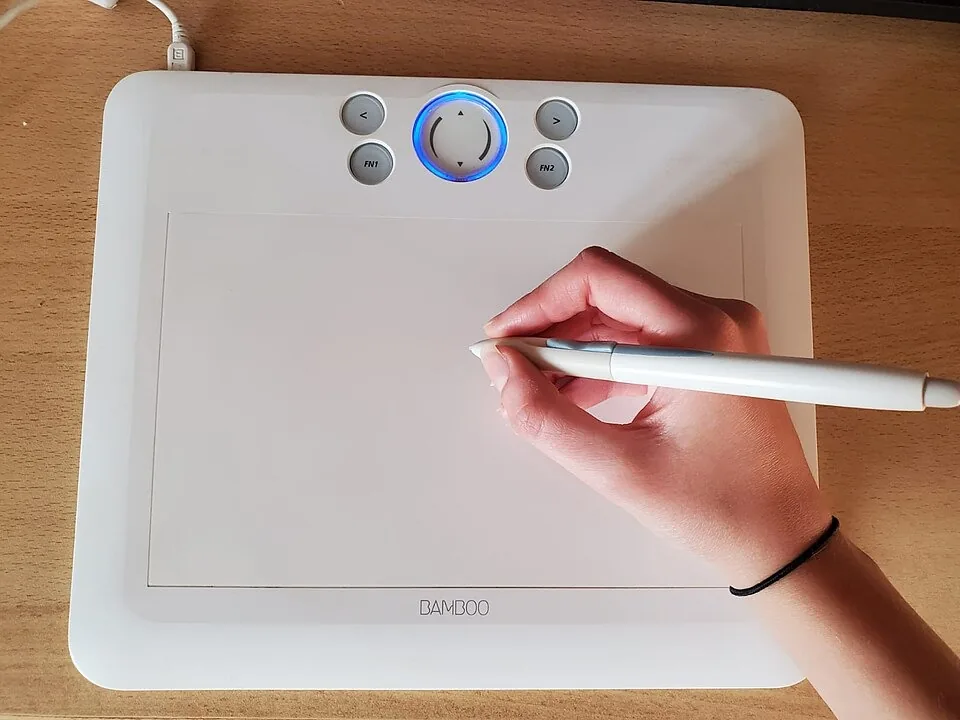

La escena es imaginaria: en 2030, una diseñadora prepara la identidad de un museo con un sistema que propone cientos de versiones. La abundancia de alternativas reduce una dificultad de ejecución, pero conserva una pregunta de proyecto: qué necesita representar esa institución y cómo juzgar una respuesta. El escenario sirve para examinar decisiones; no predice una herramienta ni un mercado que podamos dar por hechos.
En ese encargo imaginario, seleccionar cien propuestas añade trabajo si nadie ha definido qué debe resolver la identidad. Habría que conocer la colección, los públicos, las condiciones de reproducción y las personas que utilizarán el sistema. La velocidad de generación puede servir para ensayar alternativas. Su utilidad dependería de que el equipo conserve una forma de compararlas y comprobarlas fuera de la pantalla.
El encargo obliga a distinguir la producción de alternativas de la construcción de un criterio. Una identidad sorprendente puede representar mal al museo o resultar difícil de utilizar. Antes de elegir habría que precisar qué debe reconocer el público, dónde aparecerá la propuesta y cómo se comprobará su funcionamiento. Generar más opciones solo ayuda si esas preguntas permiten compararlas.
El interés de trabajar con un sistema generativo está en lo que permite ensayar y en cómo se comprueban sus resultados. Puede proponer alternativas inesperadas, pero hace falta examinar qué información utiliza, qué restricciones reconoce y qué deja sin resolver. Esa evaluación resulta más útil para el proyecto que decidir de antemano si una imagen merece llamarse creativa.
El documento de trabajo Exploring possible AI trajectories through 2030, publicado por la OCDE en febrero de 2026, construye escenarios informados por evidencia y consulta experta. Sus autores examinan trayectorias posibles e incertidumbres; el propio texto aclara que no representa necesariamente la posición oficial de la organización. Aquí se utiliza como marco de discusión, sin convertir una trayectoria en pronóstico. [1]


En ese escenario, el tiempo ahorrado en producir variantes podría emplearse en pruebas, conversación con los usuarios y ajustes. También podría traducirse en plazos o presupuestos más bajos. Ninguno de los dos resultados se desprende automáticamente de la herramienta. Dependería de cómo se organiza el trabajo y de qué tareas se consideran parte del encargo.
La diferencia entre automatizar una tarea y sustituir una profesión es fundamental. Los oficios creativos no son unidades indivisibles. Están compuestos por actividades técnicas, intelectuales, sociales y administrativas. Una tecnología puede transformar algunas sin reemplazar las demás. Sin embargo, la automatización parcial también puede debilitar las oportunidades de aprendizaje. Si las tareas iniciales de una profesión se entregan a sistemas automáticos, ¿cómo adquirirán experiencia quienes comienzan? ¿Dónde aprenderá un diseñador a reconocer proporciones, materiales y errores si su primera relación con el oficio consiste en seleccionar resultados generados por un modelo?
El aprendizaje del criterio necesita ejercicios que permitan mostrar una decisión y discutir sus efectos. Para la identidad del museo imaginario, eso podría significar probar una señal en el edificio, revisar una lectura en un teléfono o explicar la procedencia de una imagen. Una propuesta convincente en pantalla puede fallar en cualquiera de esas situaciones. Enseñar a comprobarla ofrece una tarea formativa concreta, incluso si las herramientas de producción vuelven a cambiar.
La investigación CREAATIF, presentada por el Institute for the Future of Work en 2025, estudia cambios experimentados por trabajadores creativos independientes en el Reino Unido. Su atención a condiciones laborales y participación ofrece preguntas pertinentes para Colombia, aunque sus hallazgos no describen automáticamente el empleo creativo colombiano. [2]
La inteligencia artificial introduce una diferencia de escala y de transparencia. Los modelos pueden aprender patrones de enormes cantidades de imágenes, textos y sonidos, muchos de ellos producidos por personas cuyos nombres y condiciones de trabajo no aparecen en el resultado final. La facilidad para generar nuevas obras convive así con una pregunta sobre el origen de los materiales que hicieron posible esa generación. ¿Quién autorizó su utilización? ¿Cómo se remunera a quienes contribuyeron a los repertorios de entrenamiento? ¿Qué sucede cuando un sistema reproduce rasgos reconocibles de un artista sin su consentimiento?
.jpg){kind=link}
La UNESCO sitúa la transformación digital y la IA dentro de las desigualdades de las industrias culturales en Re|Shaping Policies for Creativity de 2026. Las pérdidas de ingresos que proyecta para sectores creativos hacia 2028 son escenarios de riesgo, no resultados ya observados. La distinción importa: una advertencia puede orientar decisiones sin convertirse en una descripción del presente. [3]
La capacidad de decidir sobre una herramienta también se construye con recursos más próximos: archivos documentados, acuerdos de uso y conocimientos técnicos para contrastar resultados. Un equipo puede empezar por saber qué materiales utiliza y qué permisos tiene, sin emprender el desarrollo de un modelo de propósito general. Son decisiones de trabajo que permiten evaluar una adopción concreta.
En Colombia, trabajar con repertorios de oficios, arquitectura, música o gráfica exige conservar relaciones que una colección de imágenes puede omitir. Procedencias, autorías y contextos ayudan a reconocer qué representa cada documento. Digitalizar esos materiales debería permitir volver a sus fuentes y detectar ausencias, además de facilitar su consulta.
Para una práctica de diseño en Colombia, una tarea realizable sería mejorar el archivo con el que trabaja: procedencias claras, autorías identificadas, contextos conservados y permisos distinguibles. Otra sería contrastar los resultados automáticos con materiales, usos y personas concretas. Son decisiones sobre un proceso existente; su valor no depende de que se cumpla una predicción tecnológica para 2030.
El museo imaginario devuelve una prueba realizable: qué cambia para trabajadores y visitantes cuando la identidad sale de la pantalla. Se pueden evaluar lectura, reproducción y usos no anticipados. Las herramientas de 2030 son inciertas; esas preguntas ya permiten juzgar un proyecto y responder por sus decisiones.
Fuentes.
- Hobbs y otros — Exploring possible AI trajectories through 2030, OECD AI Papers 55, 2026
- IFOW / CREAATIF — Creative Industries and GenAI, 04.06.2025
- UNESCO — Re|Shaping Policies for Creativity, comunicado 2026
Ensayo prospectivo. La escena inicial es ficticia; los escenarios y proyecciones se distinguen de capacidades o resultados observados. Los estudios internacionales no se presentan como diagnósticos de Colombia.
Fuentes consultadas el 13.11.2026. Interpretación y edición: RUMMOR. Edición de prueba para revisión.